Week 12
Training of the neural networks
Special structured neural networks
Neural networks rose to fame in the late 1980s.
Although initially there was a lot of excitement, once random forests, boosting, and SVM came along, many people stopped caring about neural networks
A core group of people kept the excitement and continued advancing the field, until the re-emergence of neural networks in 2010 under the name deep learning
A neural network takes an input vector of \(p\) variables, \(X=(X_1,\ldots,X_p)\), and builds a non-linear function \(f(X)\) to predict the response \(Y\).
A single-layer neural network has the following components:
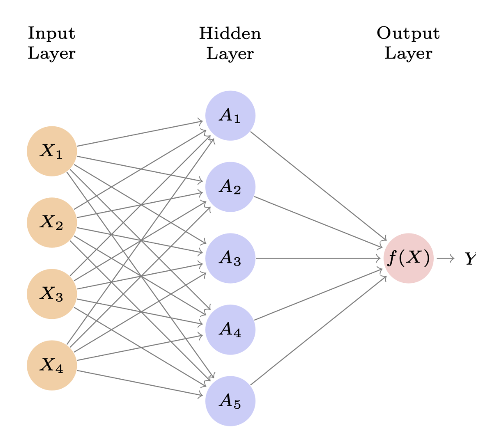
Each hidden unit computes a transformation of the original predictors.
For hidden unit \(k\):
\[ A_k=h_k(X)=g\left(w_{k0}+\sum_{j=1}^{p}w_{kj}X_j\right) \]
where:
Each hidden unit first computes a linear combination of the predictors, then applies the activation function.
Recall that in generalized additive models and splines, we used transformations of predictors to capture nonlinear relationships.
Neural networks follow a similar idea:
The hidden layer can therefore be viewed as constructing \(K\) new features from the original predictors.
Once the \(K\) activations have been computed, they are combined to produce the prediction:
\[\begin{aligned}f(x)&=\beta_0+\sum_{i=1}^K\beta_iA_i\\&=\beta_0+\sum_{i=1}^K\beta_i g\left(w_{i0}+\sum_{j=1}^pw_{ij}x_j\right).\end{aligned}\]
\[ X \xrightarrow{w} \text{linear combinations} \xrightarrow{g} \text{hidden layer} \xrightarrow{\beta} \text{output} \]
The activation function \(g(\cdot)\) introduces nonlinearity into the neural network.
Common activation functions include:
Sigmoid: maps into \((0,1)\)
\[g(z)=\frac{1}{1+e^{-z}}\]
Tanh: maps into \((-1,1)\)
\[g(z)=\tanh(z)\]
ReLU (rectified linear unit):
\[g(z)=\max(0,z)\]
ReLU is a common choice because of its simple computation.
Sigmoid: \(g(z)=\frac{1}{1+e^{-z}}\) vs. ReLU: \(g(z)=\max(0,z)\)
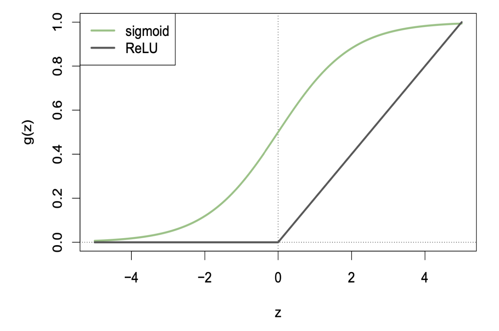
Why neural networks? An analogy is made with neurons being active (“firing”) or inactive (“silent”).
Our neural network contains unknown parameters:
We denote all these parameters by the vector \(\mathbf \theta\) and we estimate them by minimizing a loss function, depending on the prediction task.
Regression: For a quantitative response, we typically minimize the mean squared error:
\[ \min_\theta \frac{1}{n}\sum_{i=1}^n \left(y_i-f(x_i;\theta)\right)^2 \]
Classification: For \(m\) classes, the network produces \(m\) outputs, which are converted into probabilities using softmax:
\[ \widehat p_\ell(X)= \frac{\exp\{f_\ell(X;\theta)\}} {\sum_{k=1}^m \exp\{f_k(X;\theta)\}} \]
We then minimize the negative multinomial log-likelihood:
\[ \min_\theta -\frac{1}{n}\sum_{i=1}^n \sum_{\ell=1}^m \mathbf{1}\{y_i=\ell\}\log\widehat p_\ell(x_i) \]
In a multilayer neural network, each hidden layer constructs new features from the activations of the previous layer, allowing the network to learn increasingly complex representations of the predictors.
For the first layer, with \(K_1\) hidden units:
\[A_i^{(1)}=g\left(w_{i0}^{(1)}+\sum_{j=1}^pw_{ij}^{(1)}X_j\right),\qquad i=1,\ldots,K_1.\]
For layer \(\ell=2,\ldots,D\):
\[A_i^{(\ell)}=g\left(w_{i0}^{(\ell)}+\sum_{j=1}^{K_{\ell-1}}w_{ij}^{(\ell)}A_j^{(\ell-1)}\right),\]
where \(i=1,\ldots,K_\ell\).
If we have \(D\) hidden layers in total, each hidden layer \(\ell\) contains \(K_\ell\) hidden units with the coefficient parameters \(\mathbf W^{(\ell)}\in\mathbb R^{K_\ell\times K_{\ell-1}}\) and the intercept \(\mathbf W_0^{(\ell)}\in\mathbb R^{K_\ell}\)
The number of parameters across these layers is
\[\sum_{\ell=1}^D K_\ell(K_{\ell-1}+1).\]
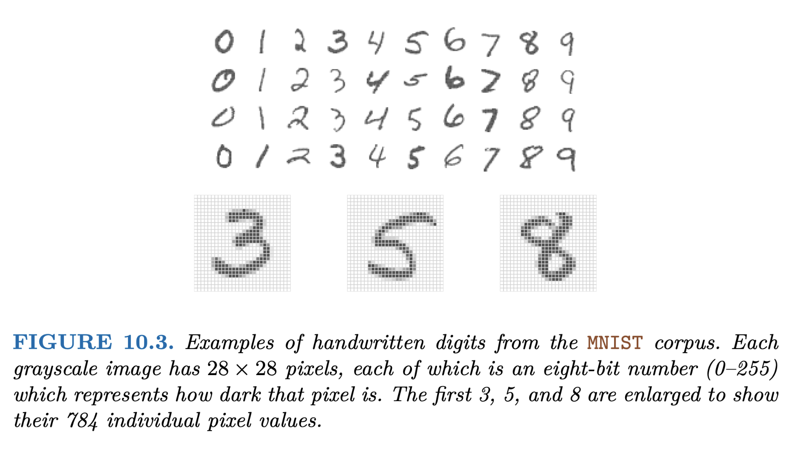
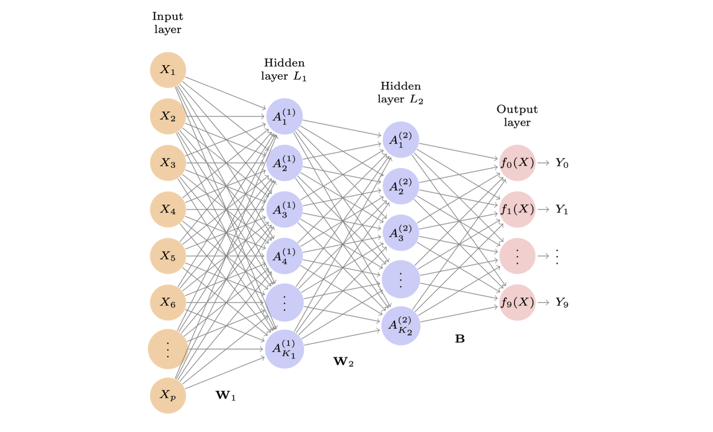
\(n = 60,000\), \(p = 784\), \(K_1 = 256\), \(K_2 = 128\)
\(\mathbf W_1\in\mathbb R^{784\times 256}\), \(\mathbf W_2\in\mathbb R^{256\times 128}\), \(\mathbf B\in\mathbb R^{128\times 10}\)
\(Y_i = \frac{e^{f_i(X)}}{\sum_{\ell =0}^9 e^{f_\ell(X)}}\), for \(i \in \{0,...,9\}\)
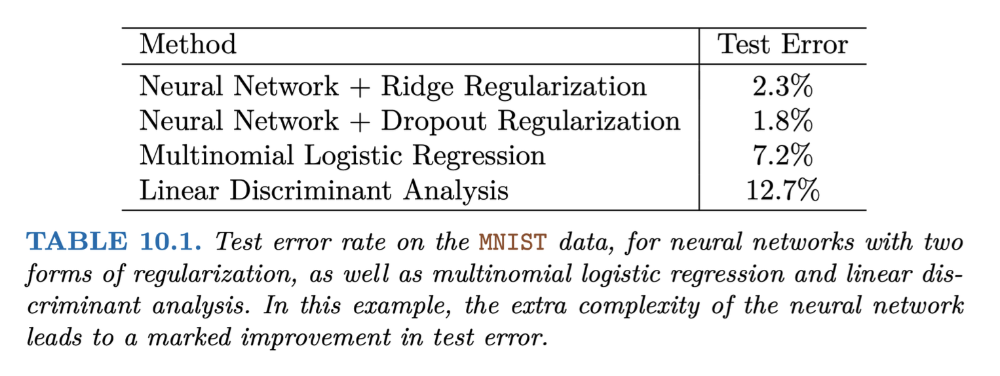
Techniques for training neural networks include:
(Stochastic) gradient descent
Regularization
Training minimizes a loss function \(J(\theta)\) over parameters \(\theta\).
For regression:
\[J(\theta)=\frac1n\sum_{i=1}^n\{y_i-f(x_i;\theta)\}^2.\]
For \(m\)-class classification:
\[J(\theta)=-\frac1n\sum_{i=1}^n\sum_{\ell=1}^m\mathbf1\{y_i=\ell\}\log f_\ell(x_i;\theta).\]
where \(f_\ell(x_i;\theta)\) is the predicted probability of class \(\ell\).
These loss functions are generally nonconvex in \(\theta\), due to the composition of linear transformations with nonlinear activation functions.
Update parameters using gradient-based optimization:
\[ \theta^{(t+1)} = \theta^{(t)} - \eta \cdot \left. \frac{\partial \mathcal{J}(\theta)}{\partial \theta} \right|_{\theta=\theta^{(t)}} \]
where \(\eta>0\) is the learning rate.
Computing the gradient uses the so-called backpropagation trick:
Consider a network with two hidden layers (biases omitted here), for observation \(i\):
\[J_i(\theta)=\frac12\left[y_i-\sum_{k=1}^{K_2}\beta_k g\left(\sum_{j=1}^{K_1}W_{kj}^{(2)}g\left(\sum_{\ell=1}^p W_{j\ell}^{(1)}x_{i\ell}\right)\right)\right]^2.\]
\[\theta=(W^{(1)},W^{(2)},\beta),\]
\[W^{(1)}\in\mathbb R^{K_1\times p},\quad W^{(2)}\in\mathbb R^{K_2\times K_1},\quad\beta\in\mathbb R^{K_2}.\]
Goal: compute \(\partial J_i/\partial W^{(1)}\), \(\partial J_i/\partial W^{(2)}\) and \(\partial J_i/\partial\beta\).
Let the pre-activation values be
\[z_{ij}^{(1)}=\sum_{\ell=1}^pW_{j\ell}^{(1)}x_{i\ell},\qquad z_{ik}^{(2)}=\sum_{j=1}^{K_1}W_{kj}^{(2)}g(z_{ij}^{(1)}).\]
Write \(e_i=f(x_i;\theta)-y_i\). Using the chain rule:
\[\frac{\partial J_i}{\partial\beta_k}=e_i\,g(z_{ik}^{(2)}),\]
\[\frac{\partial J_i}{\partial W_{kj}^{(2)}}=e_i\,\beta_k g'(z_{ik}^{(2)})g(z_{ij}^{(1)}),\]
\[\frac{\partial J_i}{\partial W_{j\ell}^{(1)}}=e_i\left[\sum_{k=1}^{K_2}\beta_k g'(z_{ik}^{(2)})W_{kj}^{(2)}\right]g'(z_{ij}^{(1)})x_{i\ell}.\]
For each training step \(t\):
Forward propagation: compute activations from input to output.
\[z_{ij}^{(1)}(\theta^{(t)})\;\longrightarrow\;z_{ik}^{(2)}(\theta^{(t)})\;\longrightarrow\;f(x_i;\theta^{(t)}).\]
Backward propagation: compute gradients from output to input.
\[\frac{\partial J_i}{\partial\beta}\;\longrightarrow\;\frac{\partial J_i}{\partial W^{(2)}}\;\longrightarrow\;\frac{\partial J_i}{\partial W^{(1)}}.\]
Parameter update: use gradients averaged over a minibatch to obtain \(\theta^{(t+1)}\).
Deep networks often contain many parameters.
Common techniques include:
Weight decay (ridge-style penalty):
\[J(\theta)+\lambda\lVert\theta\rVert_2^2.\]
Early stopping: stop training when the validation error starts to increase.
Dropout: randomly deactivate hidden units during training.
Different layers can use different penalty strengths \(\lambda\).
Lasso regularization is another option, either alongside or instead of ridge.
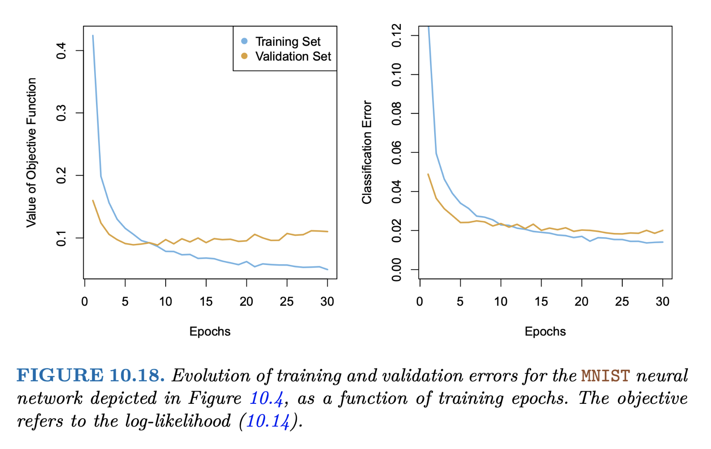
Idea: use validation performance to choose when to stop, rather than continuing until training loss is minimized.
Inspired partly by random forests, dropout randomly deactivates a fraction \(\phi\) of hidden units when fitting the model.
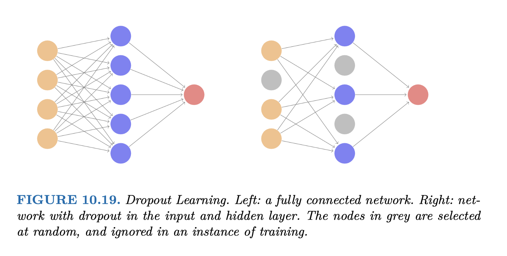
Network size: number of hidden layers and hidden units per layer.
Regularization: dropout fraction \(\phi\), lasso/ridge penalty strength \(\lambda\), possibly varying by layer.
Examples of specialized architectures:
IMDb sentiment classification: a dataset of 25,000 labeled reviews (review, sentiment).
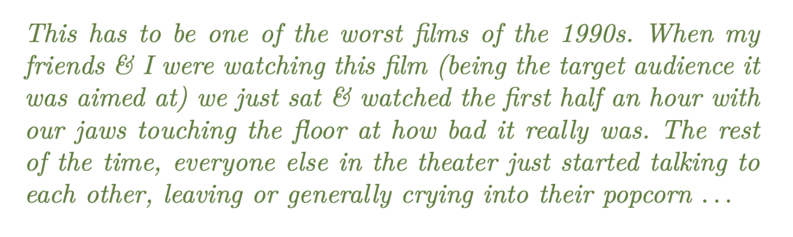
Goal: classify each review as positive or negative.
Construct a dictionary of the 10,000 most frequent words in the training reviews.
For each review, construct a feature vector of word indicators:
\[x_i\in\{0,1\}^{10,000}.\]
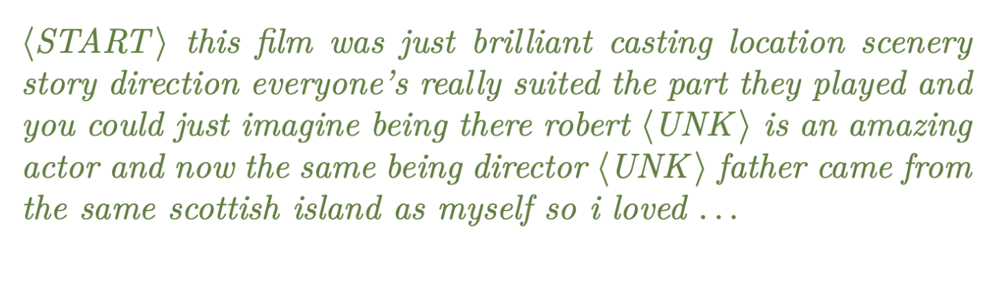
This bag-of-words representation does not preserve word order.
Lasso versus a two-hidden-layer network with 16 units in each layer: both achieve accuracy around 88% in this example.
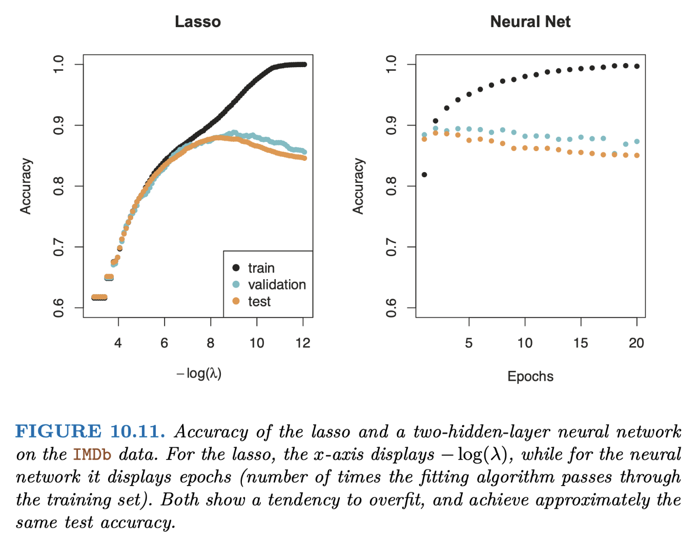
A bag-of-words representation ignores word context and order.
Bag of \(n\)-grams: record short consecutive word sequences.
Sequence models: process documents as ordered words, accounting for preceding or following words.
RNNs are useful for data with a natural sequence structure:
The input for observation \(i\) is a sequence:
\[X_i=\{X_{i1},\ldots,X_{iL}\},\]
with associated response \(Y_i\).
Each \(X_{i\ell}\) may be:
The order of the observations has meaning. The goal is to use that sequential structure to better predict \(Y_i\).
For document classification, represent review \(i\) as a sequence of \(L\) words:
\[X_i=\{X_{i1},\ldots,X_{iL}\},\]
with sentiment label \(Y_i\).
A word embedding represents each word \(X_{i\ell}\) as a vector in a Euclidean space.
Other tokenizations are possible, including characters or phrases.
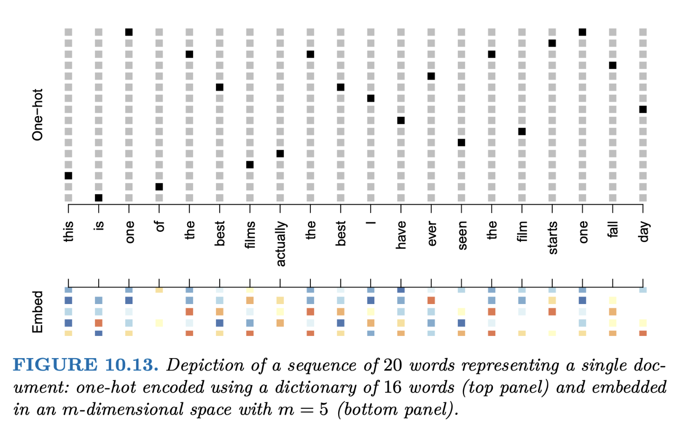
One-hot vectors are sparse indicators; embeddings use lower-dimensional, dense vectors.
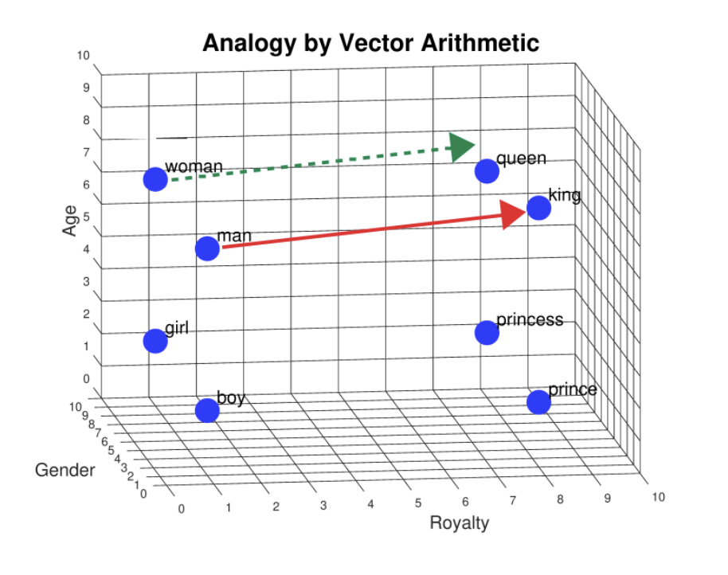
Famous illustrative analogies include relationships such as woman − man + king ≈ queen.
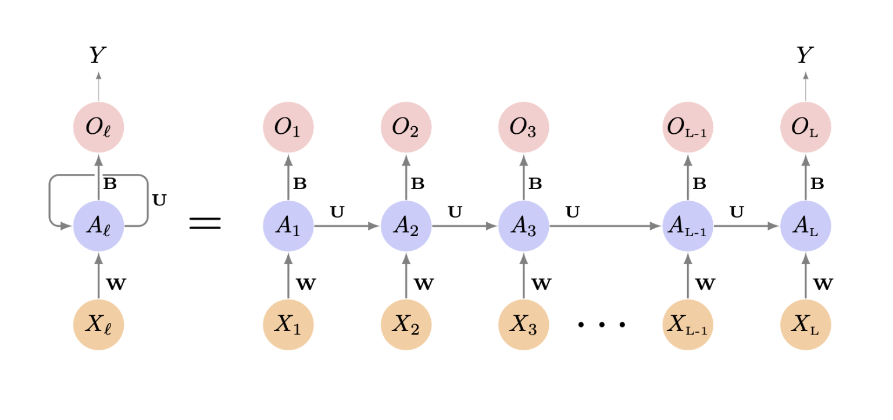
An illustrative network uses one recurrent layer with \(K=32\) hidden units.
Long short-term memory (LSTM) introduces a mechanism to help retain information over longer intervals.
CNNs are designed for data with spatial structure, such as images.
A grayscale image can be represented as a matrix:
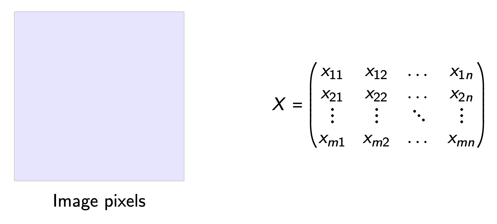
The main components include:
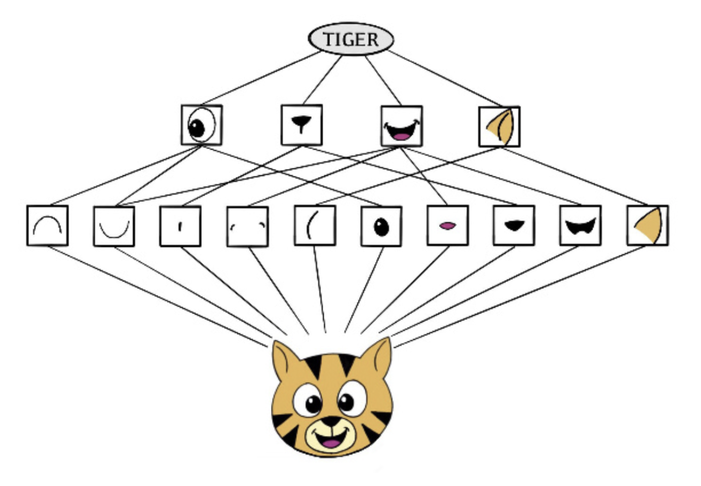
A convolution filter extracts local features of an image.
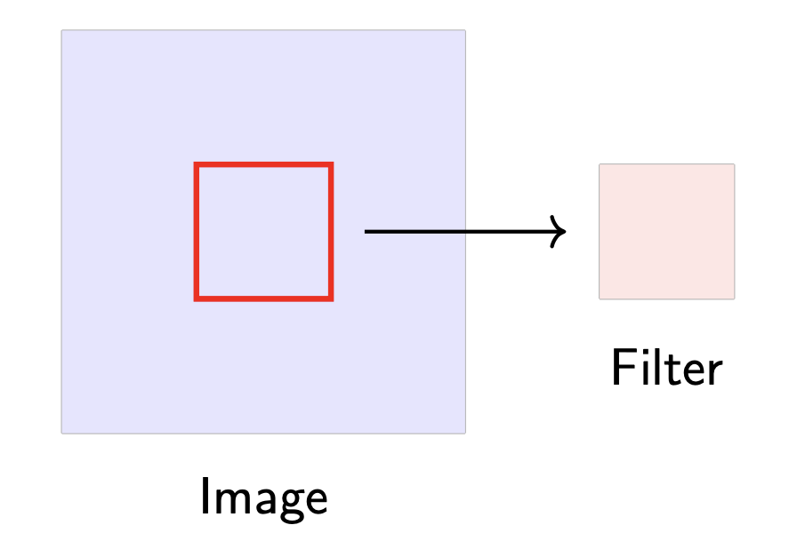
For a \(2\times2\) filter,
\[W=\begin{pmatrix}w_{11}&w_{12}\\w_{21}&w_{22}\end{pmatrix},\qquad z_{ij}=g(\langle W,X_{ij}\rangle).\]
A learned filter might detect a corner or an edge.
Applying a filter across the image produces a feature map.
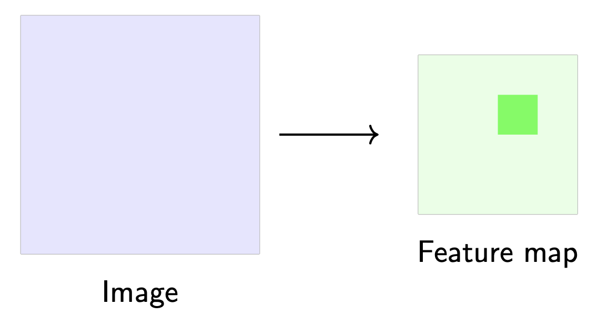
Consider the image and filter:
\[X=\begin{pmatrix}1&2&1\\0&3&2\\4&1&0\end{pmatrix},\qquad W=\begin{pmatrix}1&0\\0&-1\end{pmatrix}.\]
First patch:
\[\langle\begin{pmatrix}1&2\\0&3\end{pmatrix},W\rangle=1(1)+2(0)+0(0)+3(-1)=-2.\]
Second patch:
\[\langle\begin{pmatrix}2&1\\3&2\end{pmatrix},W\rangle=2(1)+1(0)+3(0)+2(-1)=0.\]
The first row of the feature map is \((-2,0)\).
For the same image \(X\) and filter \(W\):
Third patch:
\[\langle\begin{pmatrix}0&3\\4&1\end{pmatrix},W\rangle=0(1)+3(0)+4(0)+1(-1)=-1.\]
Fourth patch:
\[\langle\begin{pmatrix}3&2\\1&0\end{pmatrix},W\rangle=3(1)+2(0)+1(0)+0(-1)=3.\]
Therefore, the final feature map is
\[\boxed{\begin{pmatrix}-2&0\\-1&3\end{pmatrix}}.\]
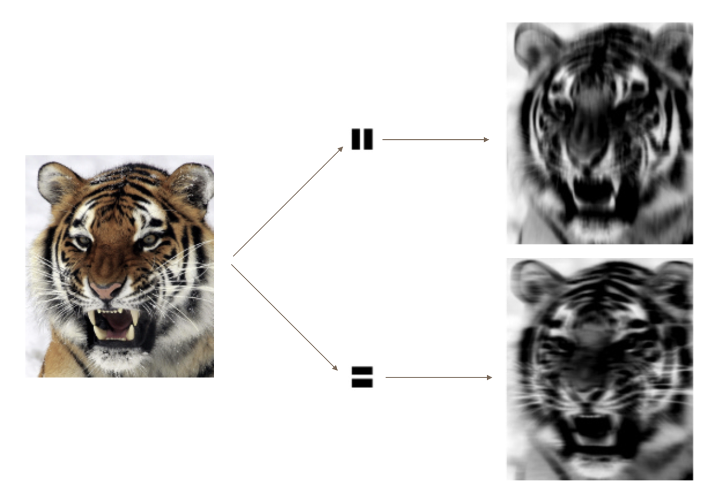
Original example: a \(192\times179\) tiger image filtered using \(15\times15\) vertical and horizontal patterns.
Pooling summarizes a large feature map using a smaller one.
With non-overlapping \(2\times2\) max pooling:
\[\begin{pmatrix}1&2&5&3\\3&0&1&2\\2&1&3&4\\1&1&2&0\end{pmatrix}\quad\longrightarrow\quad\begin{pmatrix}3&5\\2&4\end{pmatrix}.\]
For example, a \(32\times16\) image is reduced to \(16\times8\).
Pipeline:
\[\text{Image}\longrightarrow\text{Convolution}\longrightarrow\text{Pooling}\longrightarrow\text{Fully connected}\longrightarrow\text{Output}.\]
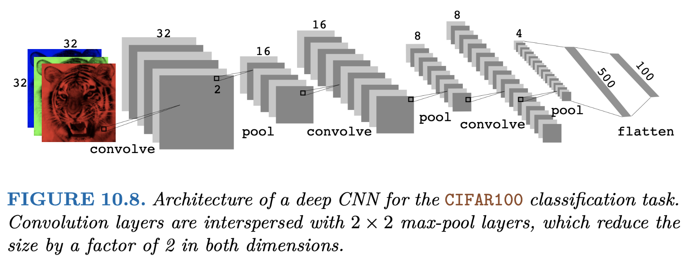
An RGB image \(X\) has dimension \(d_1\times d_2\times3\), with three color channels.
A filter \(Z\) can have dimensions \(k_1\times k_2\times3\). Its output combines convolutions from all channels:
\[X^{(1)}*Z^{(1)}+X^{(2)}*Z^{(2)}+X^{(3)}*Z^{(3)}.\]
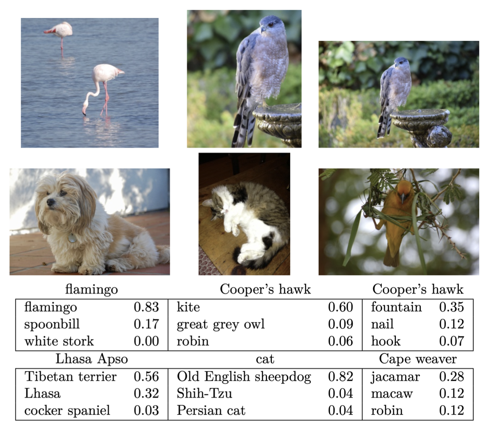
CNNs use the spatial structure of images and have been highly successful in computer vision.
Architecture design still requires tuning the number, type and sizes of layers.
Dropout, lasso and ridge-style regularization can also be used.
Examples of successes
But should we replace all older statistical tools with deep learning?
Occam’s Razor Principle: When faced with several methods that give roughly equivalent performance, pick the simplest.
Simpler models are easier to fit and understand.
We expect deep learning to be an attractive choice when the sample size is extremely large, and when interpretability is not a high priority.
Neural networks learn nonlinear relationships by constructing new features through hidden layers and activation functions.
Training: We minimize a loss function using gradient descent, with backpropagation efficiently computing gradients using the chain rule.
Regularization: Ridge/LASSO penalties, early stopping, and dropout help prevent overfitting.
Recurrent neural networks (RNNs): Designed for sequential data, using shared weights and hidden states to capture information from previous inputs.
Convolutional neural networks (CNNs): Designed for spatial data, using convolutional filters to detect local patterns and pooling to reduce dimensionality.
Announcements: Assignment due Dec. 2nd through Crowdmark
Final exam information available on the course website